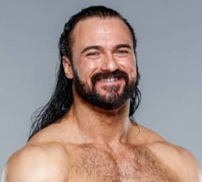

Drew McIntyre

Summary
Andrew McLean Galloway IV is a Scottish professional wrestler. He is currently signed to WWE, where he performs on the Raw brand under the ring name Drew McIntyre. Galloway began his career in 2001 in United Kingdom.
Education
Professional Athlete - Prestwick Academy
Experience
- Independent circuit (2006–2007)
- World Wrestling Entertainment/WWE (2007–2014)
- Beginnings (2007–2008)
- Florida Championship Wrestling (2008–2009)
- Intercontinental Champion (2009–2010)
- Various storylines (2010–2012)
- 3MB (2012–2014)
- Return to ICW (2014–2017)
- Evolve (2014–2017)
- Return to the independent circuit (2014–2017)
- Total Nonstop Action Wrestling
- The Rising and singles run (2015–2016)
- TNA World Heavyweight Champion (2016–2017)
- Pro Wrestling Guerrilla (2015–2016)
- Return to WWE
- NXT Champion (2017–2018)
- Alliance with Dolph Ziggler (2018–2019)
- WWE Champion (2020–2021)
- World championship pursuits (2022–present)
Skills
- Professional wrestling style and persona: ⭐️⭐️⭐️⭐️⭐️
- Video games: ⭐️⭐️⭐️⭐️⭐️
- Acting:⭐️⭐️⭐️⭐️⭐️
Awards and Championship
- British Championship Wrestling
- BCW Heavyweight Championship (2 times)
- CBS Sports
- Wrestler of the Year (2020)
- Dansk Pro Wrestling
- DPW Heavyweight Championship (1 time)
- Evolve
- Evolve Championship (1 time)
- Evolve Tag Team Championship (2 times, inaugural) – with Johnny Gargano (1) and Dustin (1)
- Evolve Tag Team Championship Tournament (2016) – with Johnny Gargano
- Open the Freedom Gate Championship (1 time)
- Fighting Spirit Magazine
- FSM Readers Award
- British Wrestler of the Year (2014)
- Ranked No. 37 of the top 50 singles wrestlers in the FSM 50 in 2015
Florida Championship Wrestling
- FCW Florida Heavyweight Championship (1 time)
- FCW Florida Tag Team Championship (2 times) – with Stu Sanders
Insane Championship Wrestling
- ICW World Heavyweight Championship (2 times)
- ICW Hall of Fame (2018)
- ICW Award (4 times)
- Moment of the Year (2014) – Surprise return at "Shug's Hoose Party
- Promo of the Year (2014) – "Shug's Hoose Party"
- Feud of the Year (2016) – The Black Label Vs. Insane Championship Wrestling
- Best on the Mic (2016)
Inside The Ropes Magazine
- Ranked No. 1 of the top 50 wrestlers in the world in the ITR 50 in 2020.
Irish Whip Wrestling
IWW International Heavyweight Championship (1 time)
NoDQ.com
- NoDQ End of Year Award (3 times)
- Male Superstar of the Year (2020)
- Babyface of the Year (2020)
- Finisher of the Year (2020)
Outback Championship Wrestling
- OCW World Heavyweight Championship (1 time)
Preston City Wrestling
- There Can Be Only One Gauntlet (2016)
Pro Wrestling Illustrated
- Most Improved Wrestler of the Year (2020)
- Ranked No. 4 of the top 500 singles wrestlers in the PWI 500 in 2020 and 2021
Scottish Wrestling Alliance
- Scottish Heavyweight Championship (1 time)
Sports Illustrated
- Ranked No. 3 of the top 10 wrestlers in 2020
Total Nonstop Action Wrestling
- Impact Grand Championship (1 time)
- TNA World Heavyweight Championship (1 time)
- Feast or Fired (2016 – World Heavyweight Championship contract)
- Global Impact Tournament (2015) – with Team International (Magnus, The Great Muta, Tigre Uno, Bram, Rockstar Spud, Khoya, Sonjay Dutt and Angelina Love)
- TNA Joker's Wild (2016)
Union of European Wrestling Alliances
- European Heavyweight Championship (1 time)
What Culture Pro Wrestling
- WCPW World Championship (1 time)
- Defiant Wrestling Award for Match of the Year (2017) – Vs. Will Ospreay at "Exit Wounds"
WWE
- WWE Championship (2 times)
- NXT Championship (1 time)
- WWE Intercontinental Championship (1 time)
- WWE (Raw) Tag Team Championship (2 times) – with Cody Rhodes (1) and Dolph Ziggler (1)
- 31st Triple Crown Champion
- Men's Royal Rumble (2020)
- Bumpy Award (2 times)
- Superstar of the Half-Year (2020)
- Lifetime Achievement Award (2021)
- Slammy Award (2 times)
- Superstar of the Year (2020)
- Male Superstar of the Year (2020)
My Hobbies
My Finishers
Contact Me